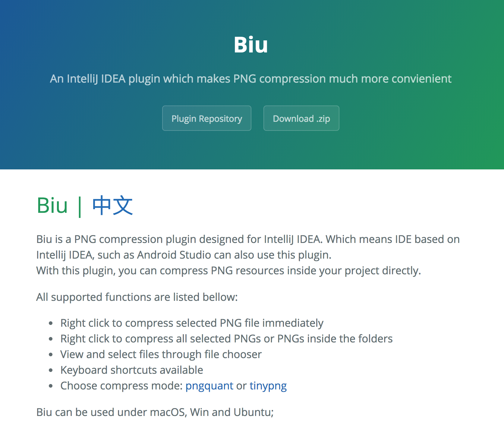

图片优化
图片优化主要是压缩，但是压缩终归也是有一个度，如果版本兼容方面没有顾虑，可以考虑采用WebP来替代png。对图片格式的选用可以参考下面这张ppt：
WebP是谷歌研发的一种支持有损压缩和无损压缩的图片文件格式，而且可以提供比JPEG或PNG更好的压缩。
在Android 4.0(API level 14)中支持有损的WebP图像，在Android 4.3(API level 18)和更高版本中支持无损和透明的WebP图像
所以前面提到的版本兼容顾虑主要在于Android系统版本对WebP的支持情况。
支持无损和透明的WebP图像只能在Android 4.3和更高版本中使用，所以需要项目minSdkVersion 18或更高版本，才能用Android Studio创建无损或透明的WebP图像
WebP使用
这里我们不需要研究WebP到底是怎么实现的压缩，只需要冲视觉上和兼容性上确认是否可以运用到项目中。
提个问题，将PNG转换为WebP后，体积一定会减小么？
既然这么问了，那么肯定是否定的。所以不管是手工转换，还是编写批处理脚本，需要注意这个点，这一点在提示面板中也有所体现。
转换为有损WebP可能出现图片更大的情况，比如：
如果你需要转换很多图片怎么办？可以直接右键文件夹，整体转换。
PNG压缩
目前来说，要将最低支持版本提升到4.3的话还是要舍弃一部分用户的，所以如果你的用户群体中4.3一下占比还比较大，那么是不适合直接采用WebP的，这时候还是需要继续通过最原始的PNG来作为图片格式。压缩PNG的工具有很多，比如在线的tinypng之类，压缩率都比较高，而且失真较少。
这里安利一款笔者开发的PNG压缩插件，可以直接安装在Android Studio或者Intellij IDEA中，类似的可以通过右键的形式，进行快速压缩图片，当然也指出批量压缩多个文件夹下的图片。

下载安装可以参照项目官网：http://blog.hacktons.cn/biu/
使用的话就是右键压缩即可：